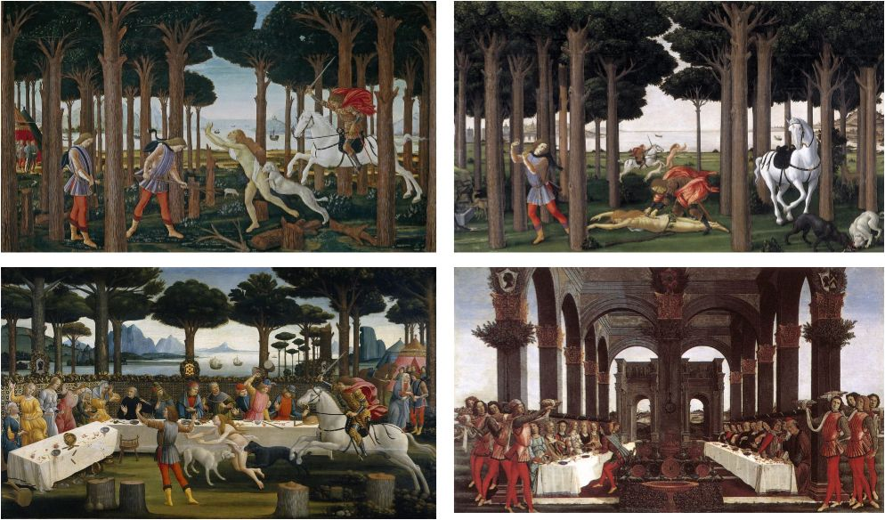

Nastagio degli Onesti è una storia tratta dal "Decamerone" di Giovanni Boccaccio, precisamente dalla quinta giornata. La storia racconta dell'amore non corrisposto del nobile Nastagio per una ragazza che alla fine accetta di sposarlo dopo aver assistito ad una scena raccapricciante. Nastagio è un nobile ravennate che si innamora di una ragazza di nobile famiglia, figlia di Paolo Traversari. Nonostante i suoi sforzi per conquistare il suo affetto, lei non ricambia il suo amore. Nastagio diventa così sconvolto che tenta più volte il suicidio. Vedendo la disperazione di Nastagio, i suoi amici e parenti gli consigliano di andare a Ravenna per dimenticare il suo amore insoddisfatto. Nastagio si trasferisce a Classe, non lontano dal suo paese natale, dove assiste ad una scena raccapricciante in una pineta. Vede una ragazza correre nuda in lacrime, inseguita da due cani che cercano di morderla e da un cavaliere con una spada nera che intende ucciderla. Il cavaliere si presenta come Guido di Anastagi e dice a Nastagio che un tempo aveva amato questa donna, ma poiché lei non lo amava, si era suicidato. Quando la ragazza morì senza alcun rimorso per la miseria che aveva inflitto al suo ammiratore, fu condannata alla crudele punizione della caccia. Ogni venerdì la ragazza avrebbe dovuto sottoporsi all'uccisione e alla successiva restaurazione dei loro corpi per tanti anni quanti erano i mesi da cui aveva rifiutato il suo corteggiatore.
Nastagio capisce che gli avvenimenti sono frutto della volontà divina e si rassegna a restare spettatore. Assiste all'agonia inflitta alla giovane dal cavaliere, dopo la quale i due sono costretti a ricominciare l'inseguimento e a scomparire dalla vista di Nastagio. Nastagio decide di approfittare della situazione e il venerdì successivo prepara un lauto banchetto nello stesso luogo del bosco, invitando i parenti della sua amata insieme ai suoi genitori. Come aveva previsto Nastagio, al termine della cena, la scena raccapricciante si ripete con le stesse strazianti e pietose conseguenze. Con ciò ottiene l'effetto desiderato: dopo che il cacciatore ha spiegato ancora una volta a tutti i presenti alla cena i motivi della sorte della ragazza, la ragazza amata da Nastagio si rende conto di aver calpestato l'amore provato da Nastagio e, per paura di subendo la stessa sorte della vittima prima di lei, cambia idea e accetta subito il matrimonio, trasformando l'odio di lui in amore. La storia è un racconto tragico dell'amore perduto e del potere del dolore, ma serve anche da monito contro il pensiero orgoglioso e l'importanza di accettare l'amore. La storia è stata rappresentata in varie forme d'arte, inclusa una serie di quattro pannelli di Sandro Botticelli.
 <-- Home